Six beats, twelve frames, five decisions. Approve the sequence and pick an option for each decision, and I start building.
These are concept stills. I rendered them with a throwaway shader so every frame is something WebGL can really do, but none of this is the build. The planets and the interface pieces stand in for Blender models. The bloom is faked. The destination is the placeholder from your 2D prototype.
From the loop closing to the site: 2.1 seconds
0 to 240 msSnap. The stroke pulls into a perfect circle.
240 to 900 msIgnition. The held breath.
900 to 2,100 msOpening. Slow, then very fast.
Before that, the visitor sets the pace. Space is on screen at once, the prompt fades in at 1.2 s, and drawing takes as long as it takes. Every number here goes into the debug panel so you can tune it by feel.
The sequence
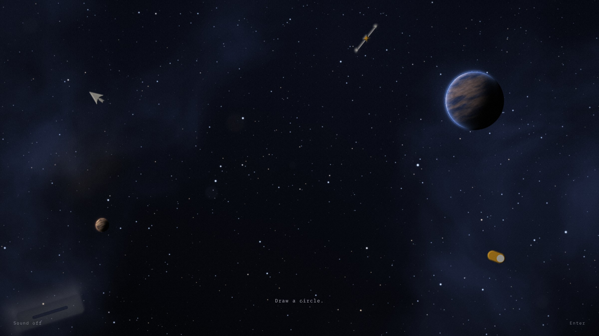
Beat 1 · 0 to about 3 s
Arrival
Space is there on load. No logo, no nav, no scroll hint.
Stars twinkle in three depth layers. The haze drifts. The planet turns very slowly.
The camera breathes and leans a few degrees toward the pointer.
The prompt fades in at 1.2 s. Sound stays off until the first touch.
Enter and the sound toggle sit in the bottom corners from the start.
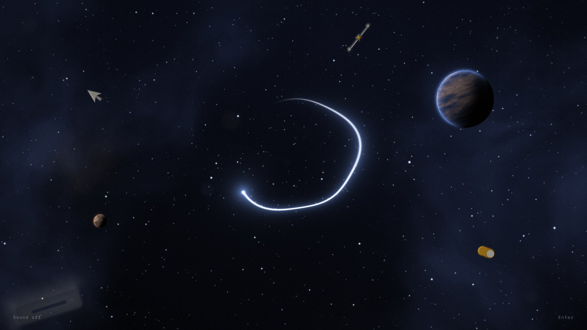
Beat 2 · visitor paced
Drawing
The pointer leaves a trail of light. Fast is thin and bright. Slow is soft and wide.
The tail fades if the hand stops. A few sparks shed off the stroke.
The prompt steps back while the hand is down.
Sound: a filtered whisper that follows the speed of the stroke.
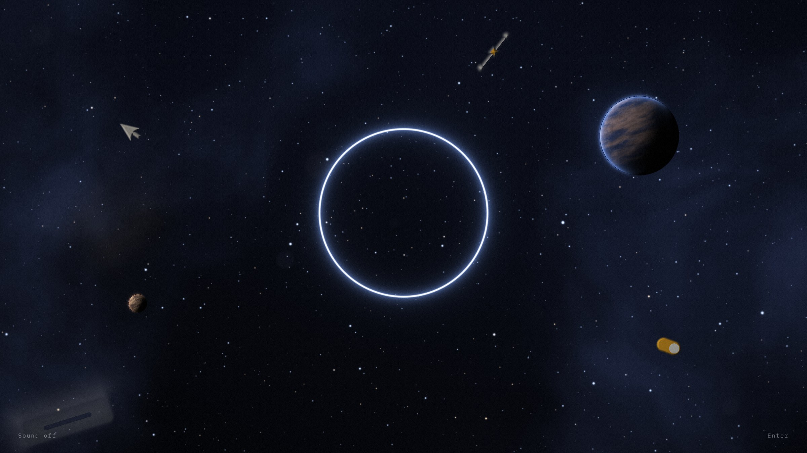
Beat 3 · 0 to 240 ms
Recognition
The check runs while the hand is still moving. The moment the loop closes, it fires.
The stroke snaps to a perfect circle around its own centre. It should feel magnetic.
One haptic tick on phones. One soft glass ping.
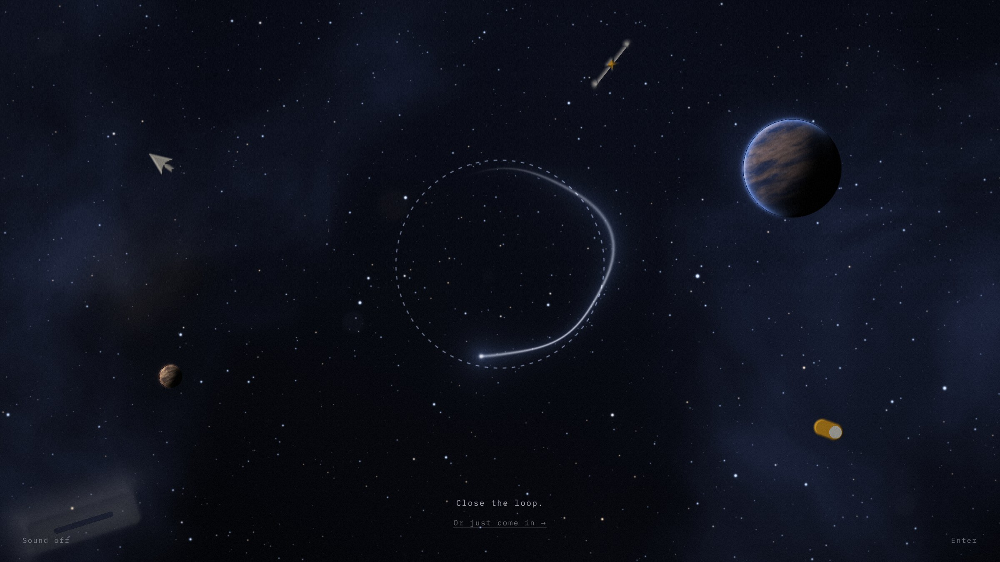
This frame shows the guide ring (after 2 misses) and the way in (after 3) together.
Beat 3, the other way
When it isn't a circle
No red, no shake. The trail dissolves and the prompt changes.
"Close the loop." "Bigger." "Rounder."
After 2 misses a dotted ring appears to trace.
After 3, "Or just come in →".
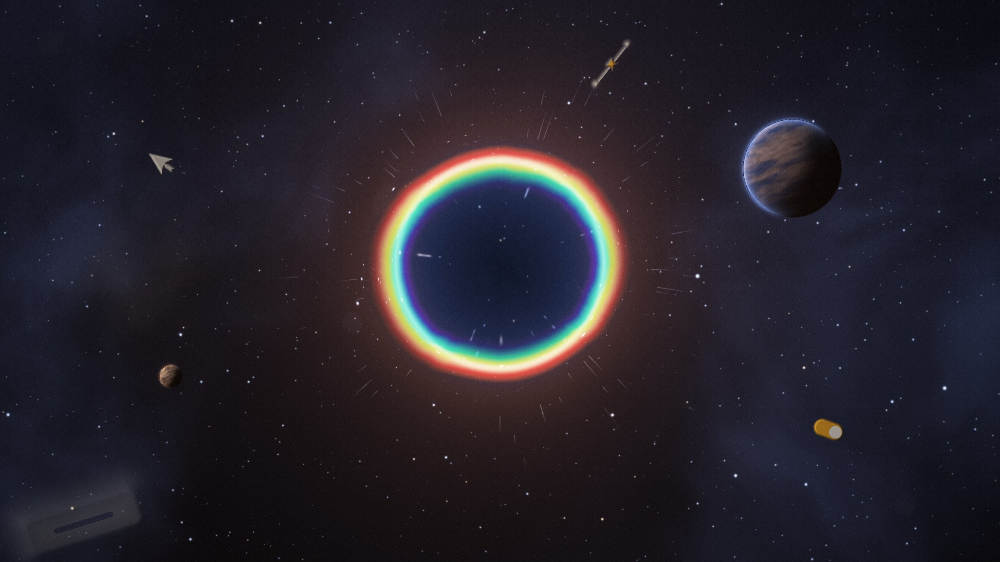
Beat 4 · 240 to 900 ms
Ignition
The circle becomes the ring. Red outside, blue inside, colour sliding slowly around it.
The space inside starts to lens. Stars near the edge bend.
Dust is pulled toward the ring. The camera pushes in a few percent.
Sound: a low rumble rising.
This is the only bright thing on screen. Nothing else glows.
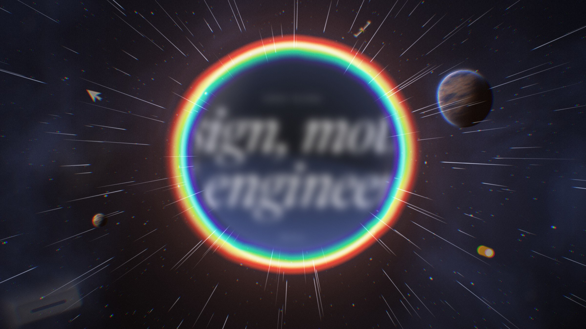
About 1,500 ms. The site is inside the ring.
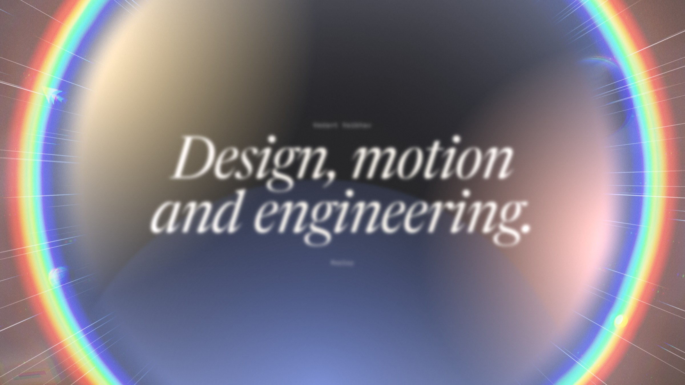
About 1,950 ms. The ring crosses the screen edge.
Beat 5 · 900 to 2,100 ms
The opening
The ring grows slowly, then very fast, until it passes the edges.
The site shows through it as real HTML, scaled up and blurred, settling as the ring passes.
Stars stretch into streaks. Colour fringing ramps up and back to zero.
One soft swell of light as the ring crosses the edge. Under 150 ms, never white.
Sound: a whoosh that follows the growth, then air.
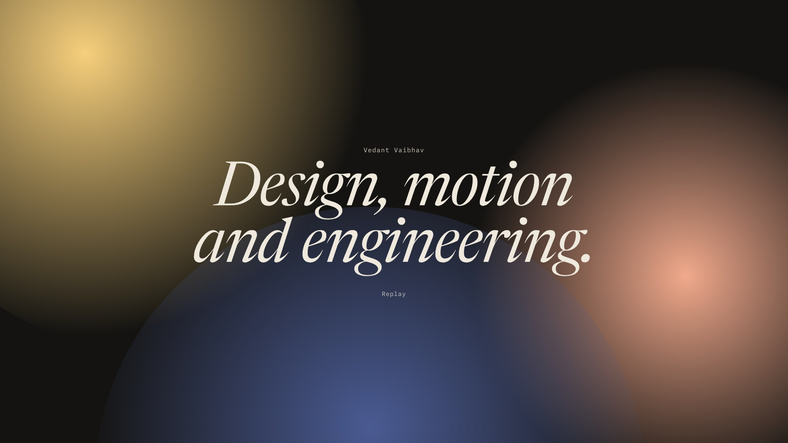
Placeholder destination, borrowed from your prototype.
Beat 6 · 2,100 ms on
In the site
The 3D scene is torn down or dropped to idle.
Keyboard and screen reader focus moves to the headline.
For now: your name, "Design, motion and engineering.", and Replay.
Five things to decide
1. Where the planet sits
A. Distant. My pick.
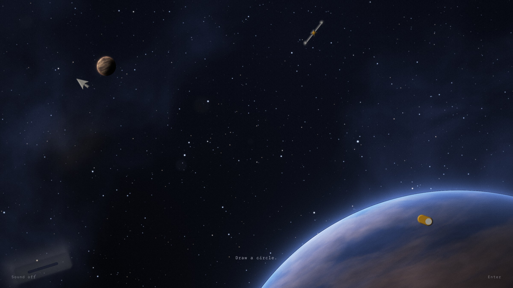
B. Limb.
A leaves the centre empty, so the ring is the only event. B is the more dramatic still, but the planet's lit rim is a second glow and it sits under the prompt.
2. Interface pieces in the debris
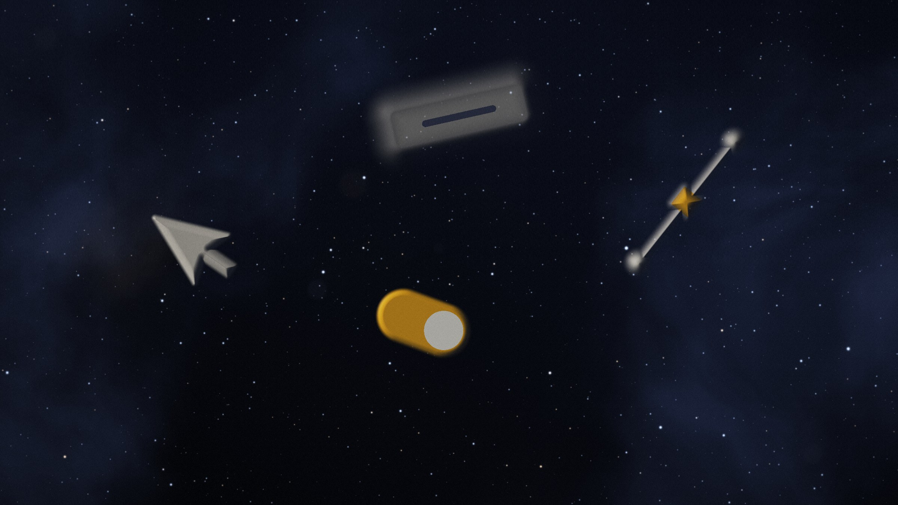
The four pieces, close up. Cursor, toggle, bezier handle, button.
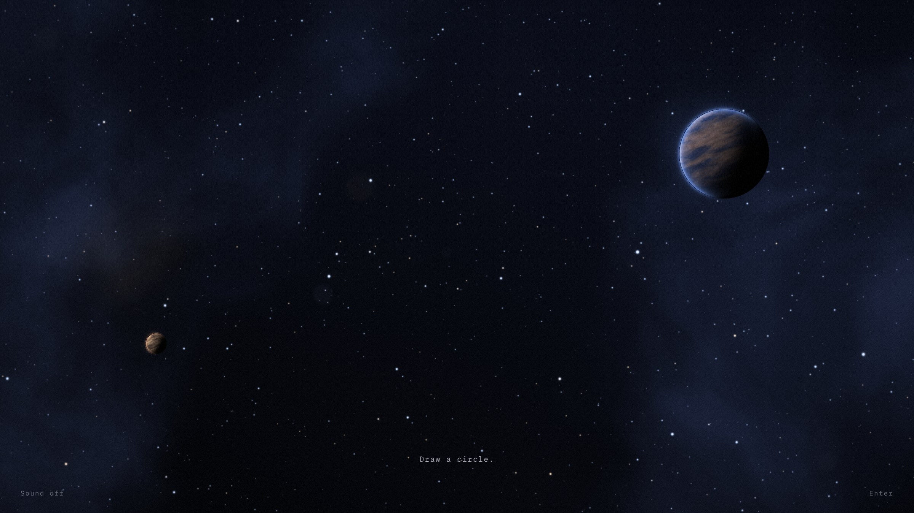
Arrival without them.
My pick: keep them. Four or five pieces, small, near the edges, most of them out of focus. They are the one thing in the frame that could only be your site. The marigold toggle is also the only brand colour on screen before the ring.
3. The ring
A. Soft band. My pick.
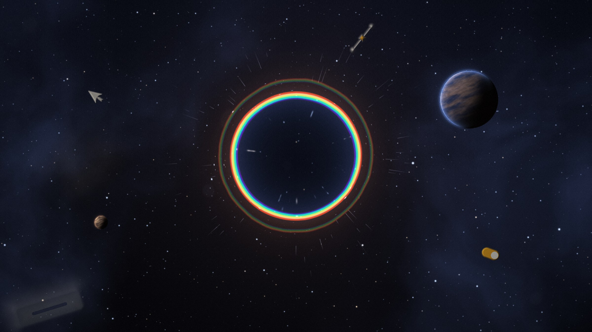
B. Prism line.
A is closer to the Lusion ring and takes bloom well. B is more precise and reads more like optics, but it is thinner on a phone and has less to give when it expands.
4. What is behind the ring for now
I used the destination from your prototype: dark, with marigold, coral and indigo colour fields. It makes the opening read clearly because the site is warmer and brighter than space. Keep it as the placeholder, or tell me what you'd rather see through the ring.
5. Small things I chose without asking
Prompt in sentence case, as you wrote it.
Sound toggle bottom left, Enter bottom right, both at low contrast.
The trail and the snapped circle are white with a blue glow. Colour only arrives at ignition.
The planet's atmosphere rim is cool blue. The warm colours stay in the far haze.
Not drawn, but in the plan
Reduced motion. No warp and no camera push. The ring fades in and the site crossfades over 400 ms.
Keyboard. Enter or Space ignites a perfect circle at the centre.
Returning visitors. About 1 s of space, then a shorter opening on its own. They can still draw.
No WebGL. A still of the space, the prompt, the Enter button, and a CSS crossfade.
Deep links. Any /work/ page skips the ritual.
What I'm unsure about
I couldn't open the references. lusion.co, zero.university, igloo.inc, oryzo.ai and the Codrops article are blocked from my environment. These frames are built from what I know of those sites, not from a side by side.
Phone portrait. Every frame here is 16:9. The portrait composition needs its own pass in milestone 1.
Lensing. It is subtle in a still. It reads in motion, when stars slide across the ring edge. I'll confirm in milestone 3.
The swell. The late opening frame may be too milky. That gets tuned on the timeline, not here.
The headline through the ring. At 124 px it is the loudest thing in the opening. That depends on the real site, which isn't designed yet.